Reportes, estadísticas y financiero¶
Qué es¶
Este grupo de módulos cubre tres necesidades distintas: reportes históricos de desempeño (por agente, grupo o llamada), monitoreo en tiempo real del estado del sistema, y facturación (cuentas de sistema, equipo y usuario).
Cómo se usa¶
Reportes de desempeño¶
Disponibles por equipo, grupo o agente, y agregables por año, mes, semana, día u hora — exportables a Excel o CSV.
Indicadores más relevantes del reporte de desempeño de agente:
| Indicador | Qué mide |
|---|---|
| Llamadas entrantes atendidas / salientes conectadas | Volumen de trabajo |
| Duración total / promedio de llamada | Incluye entrantes y salientes |
| Tiempo promedio de gestión posterior (ACW) | Tiempo total de ACW ÷ número de llamadas gestionadas |
| Tiempo promedio de manejo | (Tiempo en llamada + tiempo de ACW) ÷ llamadas atendidas |
| Tiempo promedio de timbrado | Diferencia entre inicio y respuesta (o fin, si no contestó) |
| Cantidad y duración promedio de consultas, retenciones, conferencias, transferencias | Uso de funciones de llamada activa |
| Tiempo total conectado / en espera / en pausa | Desglosado incluso por motivo de pausa |
| Tasa de ocupación | (Timbrado + en llamada) ÷ tiempo conectado |
| Tasa de efectividad | (Timbrado + en llamada + ACW) ÷ (conectado − pausado) |
| Tasa de retención | Retenciones ÷ (entrantes + salientes atendidas) |
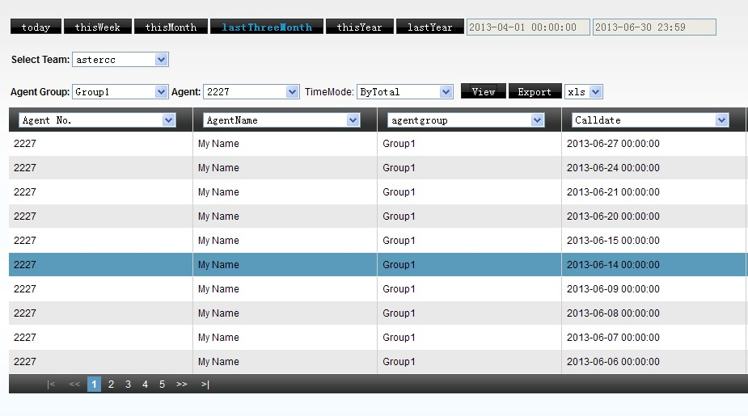
El desglose de "tiempo en pausa" separa la duración acumulada por cada motivo predefinido: almuerzo, reunión, descanso, permiso/ausencia, capacitación y otro — más dos motivos que no elige el propio agente: pausa automática (activada por el sistema cuando el grupo de agentes tiene esa opción habilitada) y pausa por administrador (forzada por un jefe de grupo). El reporte también incluye porcentaje de ocupado (tiempo en pausa ÷ tiempo de check-in × 100%) y un contador de calificación de llamada por IVR: cuántas veces se le reprodujo al cliente el IVR de calificación tras la llamada, cuántas veces marcó una tecla, y qué porcentaje de esas respuestas correspondió a cada tecla — útil para medir satisfacción sin depender de una encuesta completa.
Reporte de desempeño de grupo — niveles de servicio (SLA)¶
El reporte por grupo de agentes agrega, además de indicadores equivalentes a los de agente (tasa de contactación, duración promedio, ACW, consultas, conferencias, retenciones), los niveles de servicio estándar de la industria — el porcentaje de llamadas entrantes contestadas dentro de cierto umbral de tiempo:
| Indicador | Fórmula |
|---|---|
| Nivel de servicio ≤10s | Contestadas en ≤10s ÷ total de llamadas contestadas |
| Nivel de servicio ≤15s | Contestadas en ≤15s ÷ total |
| Nivel de servicio ≤20s | Contestadas en ≤20s ÷ total |
| Nivel de servicio ≤30s | Contestadas en ≤30s ÷ total |
| Nivel de servicio ≤60s | Contestadas en ≤60s ÷ total |
| Nivel de servicio >60s | Contestadas después de 60s ÷ total |
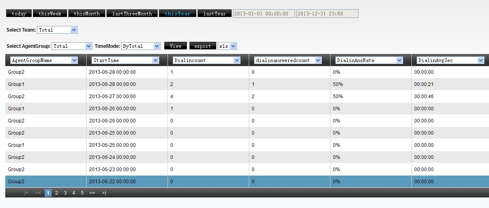
Otros indicadores exclusivos del reporte de grupo: tasa de abandono (clientes que colgaron esperando ÷ llamadas entrantes totales), velocidad promedio de respuesta ((timbrado + espera en cola) ÷ contestadas), y tiempo promedio de manejo del grupo ((tiempo en llamada + ACW) ÷ contestadas).
Reportes con salida gráfica¶
Los reportes de agente y de grupo de agentes tienen una variante gráfica (barras o líneas), exportable a HTML, imagen o PDF (estos dos últimos no soportados en Internet Explorer). El sistema pre-calcula estos datos por la noche para no consumir recursos durante el horario de operación. Se puede agregar por: total, año, mes, semana, día, hora, o media hora.
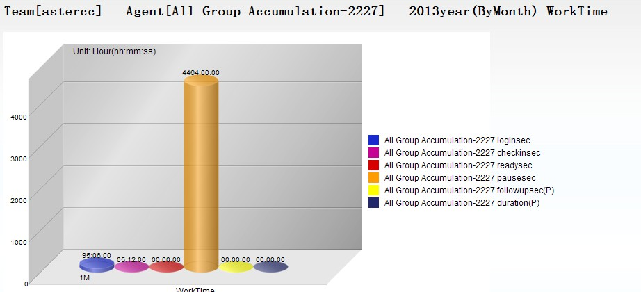
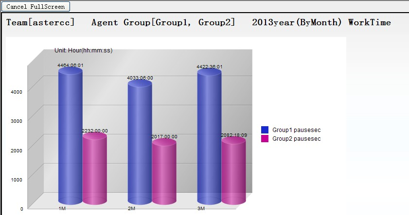
Tip
Cada indicador de tiempo tiene dos variantes: (O) cuenta el evento en el bloque de tiempo donde comenzó, y (P) lo cuenta en el bloque donde estaba en curso. Por ejemplo, una llamada de 10:59:48 a 11:00:32: para las 10:00, (O)=44s y (P)=12s; para las 11:00, (O)=0s y (P)=32s. Si se necesitan columnas que no vienen por defecto, se puede armar una plantilla de columnas personalizada (nombre solo en inglés) para reutilizar esa selección después.
Reportes de llamadas detalladas¶
| Reporte | Qué muestra |
|---|---|
| Detalle de servicio entrante | Por llamada: agente, números, tiempo en IVR, tiempo en cola, timbrado, conversación, y el evento final que la cerró |
| Detalle de servicio saliente | Por llamada: agente, números, timbrado, conversación, evento final |
| Resumen de salientes | Por agente: cantidad de marcaciones, cantidad contestadas, duración total, costo — agregado, no línea por línea |
| Detalle de IVR | Por paso de IVR: duración, estado del IVR, número que llama/llamado, y cómo terminó (colgó, transfirió, error) |
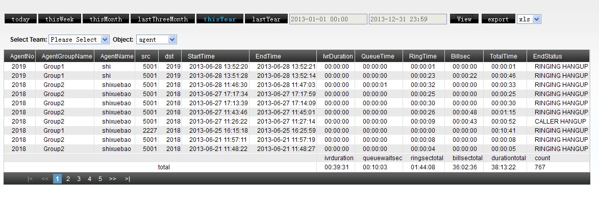
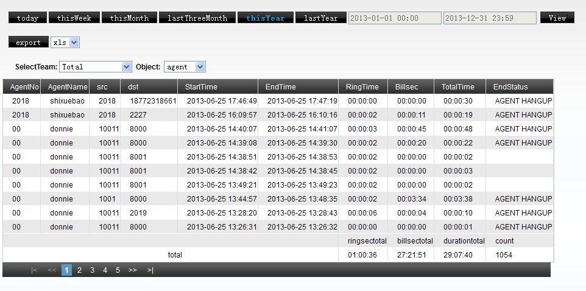
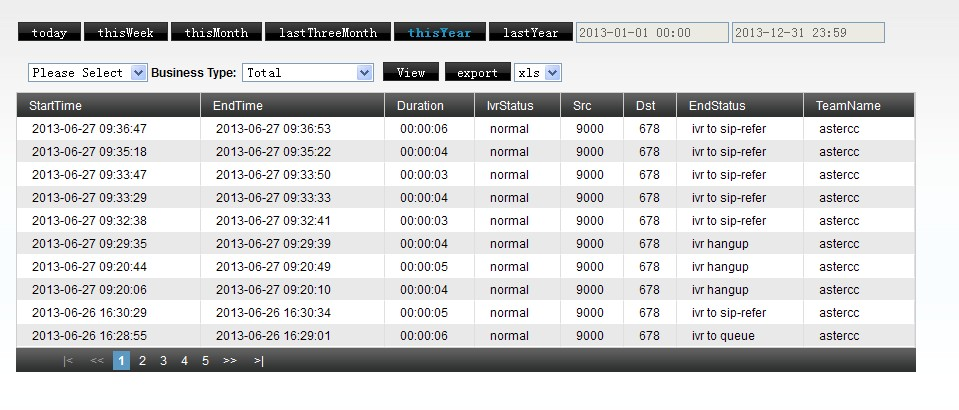
Estadísticas operativas del sistema¶
-
Estadísticas de importación de datos: por rango de fecha, cuántos registros se importaron en total, y cuántos resultaron exitosos, fallidos o duplicados — complementa a Marcador y campañas.
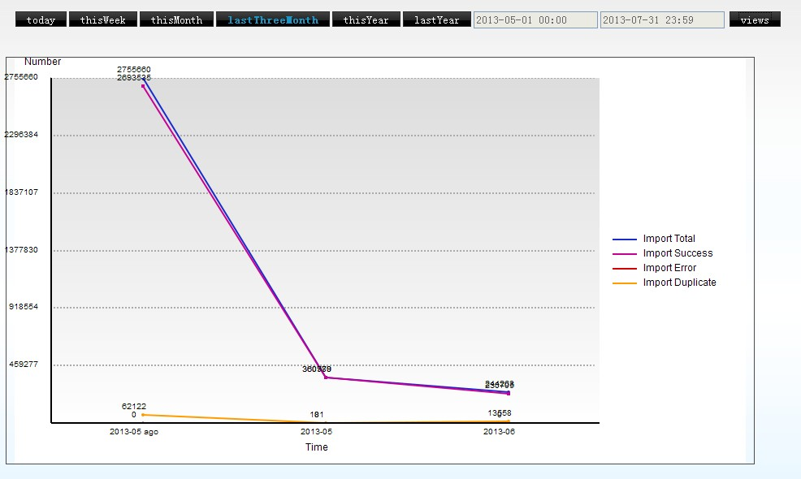
-
Estadísticas de datos del sistema: serie de tiempo de cuentas conectadas, agentes conectados, agentes en check-in, clientes en conversación, clientes en espera, y pausas manuales — el nivel de agregación se ajusta automáticamente según el rango elegido (cada 5 minutos si es un solo día, por día si es un rango dentro del mismo año, por año si el rango cruza años).
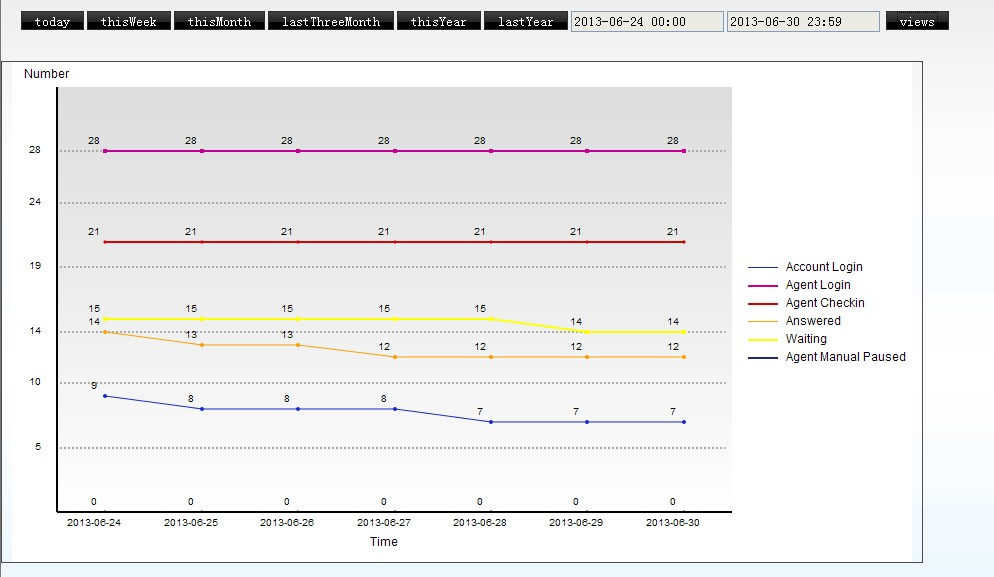
Monitoreo en tiempo real¶
-
Agentes en línea: número de agente, cola, estado, cantidad de llamadas contestadas/hechas, tiempo total de conversación, equipo, hora de conexión — con opción de auto-refrescar cada 30 segundos.
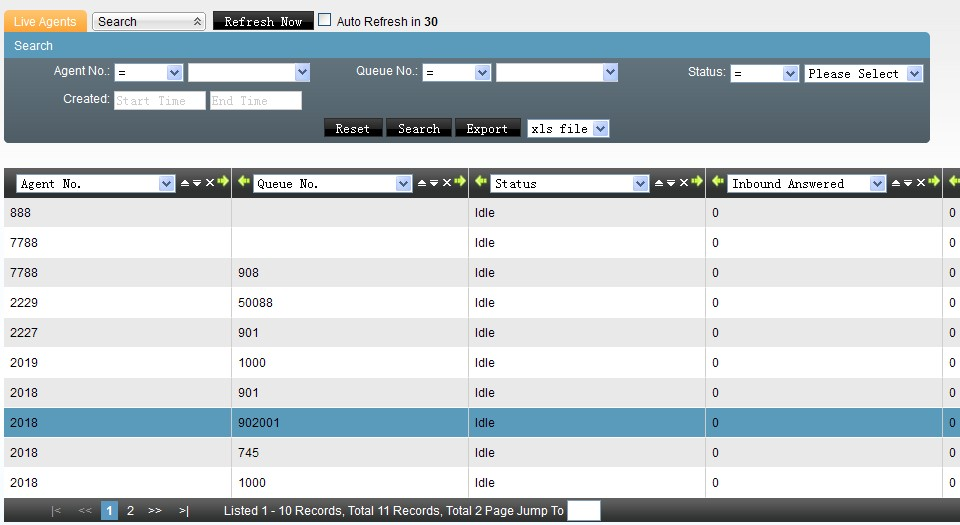
-
Usuarios en línea: cuentas conectadas ahora mismo, con IP de origen, tipo de cuenta, equipo, grupo de cuentas, hora de conexión — y un botón para forzar el cierre de sesión de cualquier cuenta que no sea la propia.
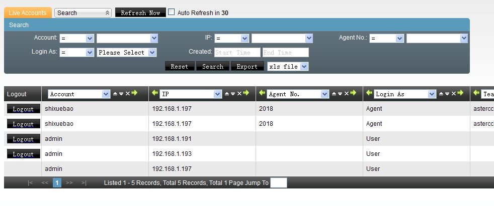
-
Uso de troncales en tiempo real: llamadas entrantes y salientes en curso por troncal, agrupadas por equipo, con auto-refresco cada 5 segundos (se puede desactivar); entrantes y salientes se muestran en dos tablas separadas.
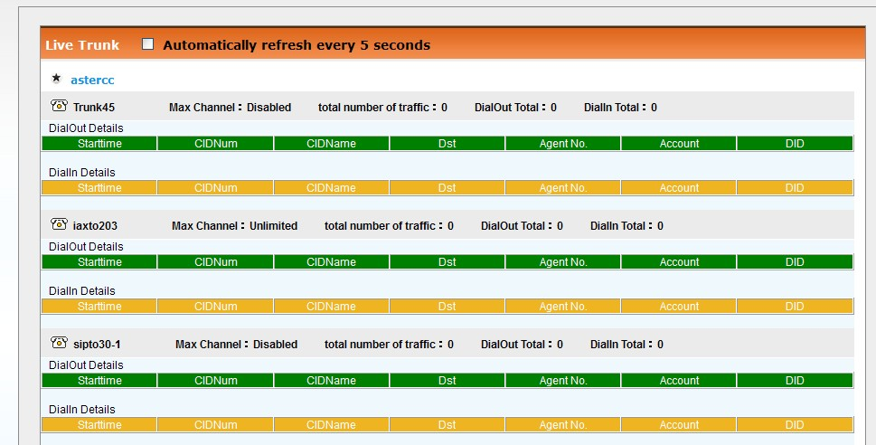
-
Uso del sistema por equipo: cuántos agentes, colas, extensiones, etc. tiene provisionados cada equipo en este momento. Un administrador de sistema ve todos los equipos; un administrador de equipo solo ve el suyo.
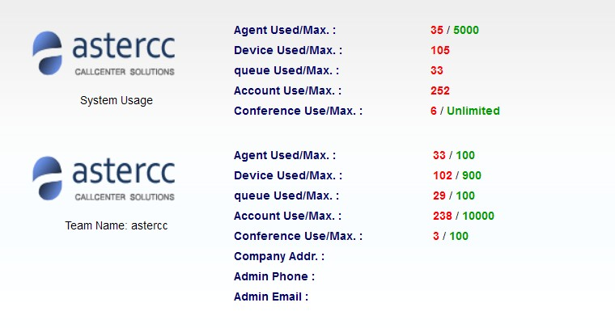
Monitoreo de grupo de agentes (detallado)¶
Esta pantalla es la más completa: muestra, por equipo y por grupo de agentes, cuántos agentes están conectados / libres / timbrando / en llamada / pausados / en gestión posterior, y lista cada agente individualmente con su estado, contador de respuestas/llamadas, tiempo en llamada, número del cliente actual, hora de conexión, tiempo desde la última llamada, y si es estático/dinámico y en línea/fuera de línea.
Al hacer clic sobre un agente en llamada, se abre un panel de control con:
| Acción | Qué hace |
|---|---|
| Colgar | Termina todas las llamadas de ese agente |
| Monitorear | Escucha silenciosa de la llamada en curso |
| Intervenir | El jefe de grupo se suma activamente a la llamada |
| Susurrar | Habla con el agente sin que el cliente lo escuche |
| Interrumpir | Cuelga al agente; el cliente queda hablando con quien ejecutó la acción |
| Forzar ocupado | Pone al agente en pausa forzosamente |
| Forzar libre | Sacar al agente de pausa forzosamente |
| Forzar check-out | Desconecta al agente de la cola (deshabilitado si el agente es de tipo estático) |
Estas acciones usan como número ejecutor, por defecto, la extensión del propio jefe de grupo que las dispara. Los estados de un agente se codifican por color: libre, timbrando, en llamada, en conferencia, en pausa, en gestión posterior, y los dos casos de consulta (consultando / siendo consultado).
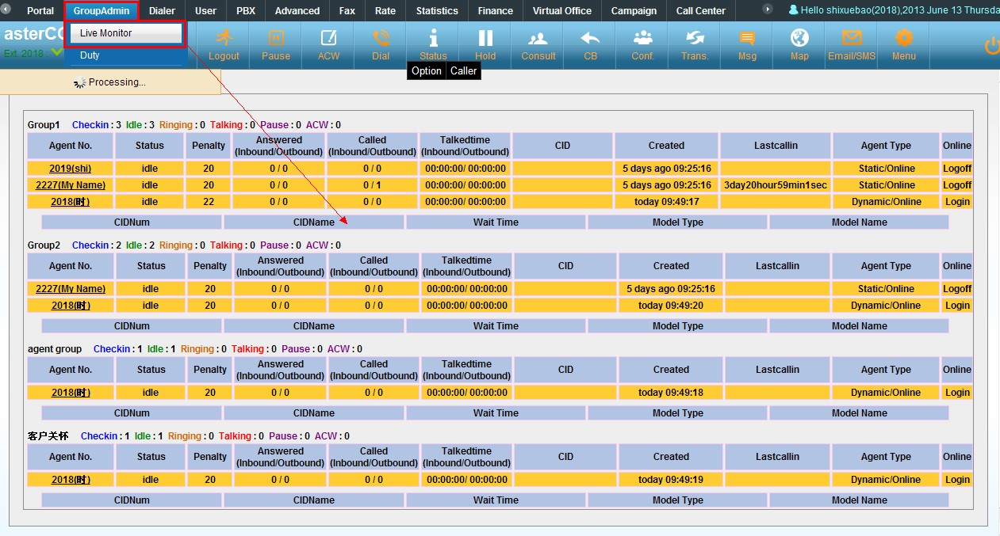
Hay también una vista de pantalla completa pensada para mostrar en un monitor grande de la sala de operaciones, con una alarma sonora que se dispara cada vez que la cantidad de clientes esperando en cola sube en múltiplos de 5.
Información del sistema¶
- Estado de licencia: usuarios autorizados, máximo de agentes, concurrencia máxima de predictivo, proveedor, vigencia — con carga/descarga del archivo de licencia.
- Procesos del sistema: estado del kernel y del CTI, con botones de reinicio individual; reiniciar o apagar el servidor completo desde la misma pantalla.
- Uso actual: cantidad de agentes, colas, extensiones y equipos dados de alta.
- Aviso de vencimiento: alerta visual si algún módulo está por expirar.
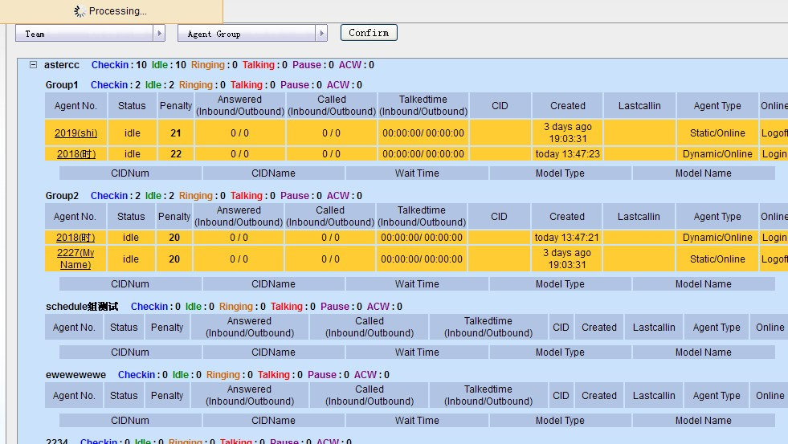
Tip
Cuando se cambian los campos de integración de eventos de un equipo (dirección de eventos, interfaz de negocio, cadena de verificación), hay que reiniciar el CTI desde esta pantalla para que la nueva conexión tome efecto.
Financiero¶
| Tipo de factura | Para quién |
|---|---|
| Factura de sistema | El operador — refleja el costo real de los troncales según la tarifa de sistema |
| Factura de equipo | Cada equipo/cliente, según su tarifa de equipo |
| Factura de usuario | Cuentas individuales con facturación propia |
Las facturas se generan automáticamente de forma periódica y pueden consultarse en línea o enviarse por correo para respaldo o impresión. También existe un resumen de gasto por agente y un log de movimientos financieros por agente (para ajustes manuales de saldo — alta o cobro — con motivo y datos bancarios), útil para modelos donde se le paga al agente por desempeño o volumen. Un reporte adicional de estadísticas de gasto permite comparar el consumo por equipo o por cuenta en un rango de fechas, en formato tabla o gráfico.
Referencia rápida¶
| Necesito | Dónde |
|---|---|
| Ver desempeño de un agente/grupo | Reportes y estadísticas → Servicio de agente / de grupo |
| Ver niveles de servicio (SLA) | Reportes y estadísticas → Servicio de grupo |
| Ver reportes gráficos | Reportes y estadísticas → Gráfico de agente / de grupo |
| Ver detalle de llamadas entrantes/salientes/IVR | Reportes y estadísticas → Detalle de servicio entrante / saliente / IVR |
| Ver quién está conectado ahora | Información en tiempo real del sistema → Agentes/usuarios en línea |
| Intervenir en una llamada en curso | Información en tiempo real → Monitoreo de grupo de agentes |
| Consultar o enviar una factura | Financiero → Factura de sistema / equipo / usuario |
Fuentes¶
raw/zh/模块使用说明/报表和统计/坐席服务明细.txtraw/zh/模块使用说明/报表和统计/坐席组服务明细.txtraw/zh/模块使用说明/报表和统计/坐席图形报表.txtraw/zh/模块使用说明/报表和统计/坐席组图形报表.txtraw/zh/模块使用说明/报表和统计/呼入服务明细.txtraw/zh/模块使用说明/报表和统计/呼出服务明细.txtraw/zh/模块使用说明/报表和统计/呼出汇总.txtraw/zh/模块使用说明/报表和统计/ivr呼入服务明细.txtraw/zh/模块使用说明/报表和统计/导入数据统计.txtraw/zh/模块使用说明/报表和统计/系统数据统计.txtraw/zh/模块使用说明/财务统计/系统账单.txtraw/zh/模块使用说明/财务统计.txtraw/zh/模块使用说明/财务统计/团队账单.txtraw/zh/模块使用说明/财务统计/坐席账务日志.txtraw/zh/模块使用说明/财务统计/坐席费用汇总.txtraw/zh/模块使用说明/财务统计/用户账单.txtraw/zh/模块使用说明/财务统计/费用统计.txtraw/zh/模块使用说明/报表和统计.txtraw/zh/模块使用说明/系统实时信息/坐席组监控.txtraw/zh/模块使用说明/系统实时信息/中继实时使用情况.txtraw/zh/模块使用说明/系统实时信息/系统信息.txtraw/zh/模块使用说明/系统实时信息/在线坐席.txtraw/zh/模块使用说明/系统实时信息/在线用户.txtraw/zh/模块使用说明/系统实时信息/系统使用信息.txtraw/zh/模块使用说明/系统实时信息.txtraw/en/module_manual/statistics.txtraw/en/module_manual/statistics/agent_details.txtraw/en/module_manual/statistics/agent_graph.txtraw/en/module_manual/statistics/agent_group_details.txtraw/en/module_manual/statistics/agent_group_graph.txtraw/en/module_manual/statistics/import.txtraw/en/module_manual/statistics/inbound_details.txtraw/en/module_manual/statistics/ivr_details.txtraw/en/module_manual/statistics/outbound.txtraw/en/module_manual/statistics/outbound_details.txtraw/en/module_manual/statistics/system.txtraw/en/module_manual/realtime.txtraw/en/module_manual/realtime/accounts.txtraw/en/module_manual/realtime/agent_monitors.txtraw/en/module_manual/realtime/agents.txtraw/en/module_manual/realtime/live_trunk.txtraw/en/module_manual/realtime/system_messages.txtraw/en/module_manual/realtime/usages.txt